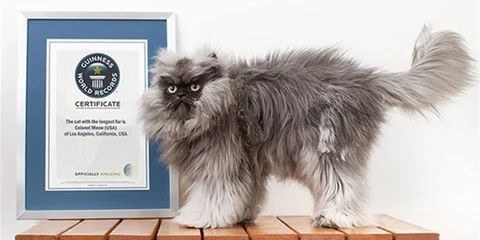

Gatos
Leonardo Juarez
Miguel Davila
Gatos Famosos
Garfi: El enfado personificado

Grumpy Cat: La reina de los memes

Colonel Meow: El Gato con Récord Mundial

Los gatos son una de las mascotas más populares del mundo. También se encuentran entre los animales más interesantes para estudiar. Las características de los gatos son muchas y únicas, puesto que, algunas de ellas no se encuentran en otros animales domésticos. Los gatos son curiosos por naturaleza y les encanta explorar. Son animales muy independientes y no les gusta depender de sus dueños. Son animales domésticos que necesitan hacer mucho ejercicio al día, es por ello, que son cazadores por naturaleza y pueden llegar a jugar durante muchas horas.
Como todos sabemos, los gatos son conocidos por su inteligencia, alegría y agilidad. Algunas personas han argumentado que los gatos se han vuelto tan comunes porque tienen una personalidad humana: autosuficientes, distantes con los extraños y territoriales, pero afectuosos con los miembros de la familia. Otros dicen que la naturaleza independiente de los gatos los hace más fáciles de cuidar que los perros u otras mascotas. En cualquier caso, las características de los gatos han enamorado desde siempre a muchas personas.